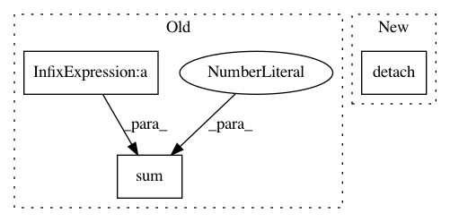

65713b1715b1628d99dac611a8853190b0c91f37,ml/rl/models/actor.py,GaussianFullyConnectedActor,forward,#GaussianFullyConnectedActor#Any#,143
Before Change
// ONNX doesn"t like reshape either..
return rlt.ActorOutput(action=action)
// Since each dim are independent, log-prob is simply sum
log_prob = torch.sum(
self._log_prob(r, scale_log) - self._squash_correction(action), dim=1
)
return rlt.ActorOutput(action=action, log_prob=log_prob.reshape(-1, 1))
def _atanh(self, x):
After Change
if SummaryWriterContext._global_step % 1000 == 0:
SummaryWriterContext.add_histogram("actor/forward/loc", loc.detach().cpu())
SummaryWriterContext.add_histogram(
"actor/forward/scale_log", scale_log.detach().cpu()
)
SummaryWriterContext.add_histogram(
"actor/forward/log_prob", log_prob.detach().cpu()
In pattern: SUPERPATTERN
Frequency: 3
Non-data size: 3
Instances
Project Name: facebookresearch/Horizon
Commit Name: 65713b1715b1628d99dac611a8853190b0c91f37
Time: 2019-10-09
Author: kittipat@fb.com
File Name: ml/rl/models/actor.py
Class Name: GaussianFullyConnectedActor
Method Name: forward
Project Name: IBM/adversarial-robustness-toolbox
Commit Name: 86aca57545cfe312151cc35528035cd9c0aafe2d
Time: 2018-05-17
Author: M.N.Tran@ibm.com
File Name: art/classifiers/pytorch.py
Class Name: PyTorchClassifier
Method Name: predict
Project Name: facebookresearch/Horizon
Commit Name: e0da178a7c3c0626fa861190af89c4aa5c08c160
Time: 2018-07-15
Author: edoardoc@fb.com
File Name: ml/rl/training/dqn_trainer.py
Class Name: DQNTrainer
Method Name: train